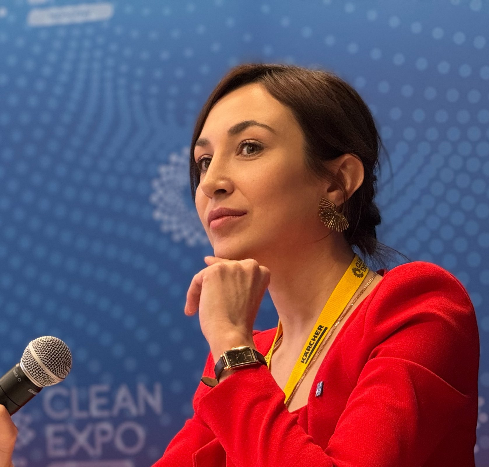
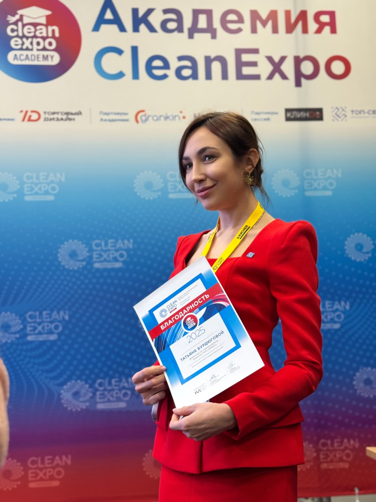
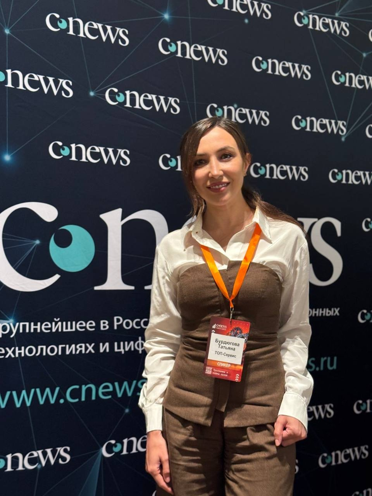
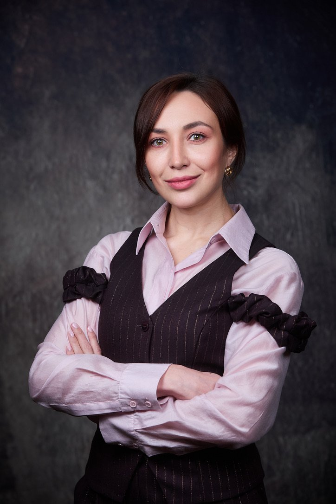

ИИ в реальном бизнесе
Где ИИ честно забирает рутину, где помогает аналитику и где без человека по-прежнему никуда. Ответственность не автоматизируется.
Спикер CleanExpo и CNews Forum
Говорю только о том, что внедряю сама: ИИ и цифровизация в большом сервисном бизнесе.

Где ИИ честно забирает рутину, где помогает аналитику и где без человека по-прежнему никуда. Ответственность не автоматизируется.
Почему автоматизация так часто не взлетает. Программа ускоряет то, что уже есть: порядок или хаос.
Сколько стоит работа, если ИИ ускорил её в десять раз. Почему умирает оплата за часы и что теперь дорожает.
Форматы: доклад, модерация, панельная дискуссия, лекция для студентов и MBA, экспертный комментарий.
Доклад «ИИ наводит порядок: эволюция инструмента в большой клининговой компании». Москва, «Крокус Экспо», 11:15. Бесплатный билет по промокоду TG2026.
Доклад о цифровизации сервисного бизнеса: сначала процесс, потом инструмент.
Лекция для студентов о том, как устроена операционка большой компании.
Модерация сессии «Автоматизация бизнес-процессов и ИИ в клининге» и доклад «Чистый код». Благодарность площадки.
Панельные дискуссии о реформировании отрасли.



Фрагмент доклада на CNews Forum: почему уборка только кажется простой и почему сначала процесс, потом инструмент.

«Я захожу в незнакомые сферы без правильного диплома и разбираюсь быстрее тех, у кого он есть».
Первую систему я придумала в 2009 году, на первом месте работы: расчёт объёмов для управленческого учёта, ещё в таблицах. Дальше были финансы, запуск компании с нуля и внедрения учётных систем в разных отраслях.
Восемь лет у меня было собственное дело в техническом осмотре: больше 26 пунктов, холдинг из 13 юридических лиц и отраслевой канал, который читали около 70% рынка.
Сейчас отвечаю за стратегическое развитие сервисной компании с тысячами сотрудников: процессы, цифровизация, внедрение ИИ. Учусь на MBA в МГУ.
Вне работы: бег, вокал и гармонь, кофе каждое утро.
Татьяна Бурдюгова, практик внедрения ИИ и цифровизации в большом сервисном бизнесе. Отвечает за стратегическое развитие компании с тысячами сотрудников. Спикер CleanExpo и CNews Forum. Строит системы в бизнесе с 2009 года, учится на MBA в МГУ.
Татьяна Бурдюгова строит системы в бизнесе с 2009 года: от управленческого учёта в таблицах до внедрения ИИ. Работала в финансах, запускала компанию с нуля, вела проекты внедрения учётных систем в разных отраслях. Восемь лет руководила собственным холдингом из 13 компаний в сфере технического осмотра и вела отраслевое сообщество, которое объединяло около 70% рынка. Сейчас отвечает за стратегическое развитие сервисной компании с тысячами сотрудников: процессы, цифровизация, внедрение ИИ. Спикер CleanExpo 2025 и 2026, CNews Forum, участник дискуссий в Общественной палате РФ, читает лекции для студентов. Два высших образования, учится на MBA в МГУ.
Фото можно использовать в анонсах и публикациях с указанием имени.